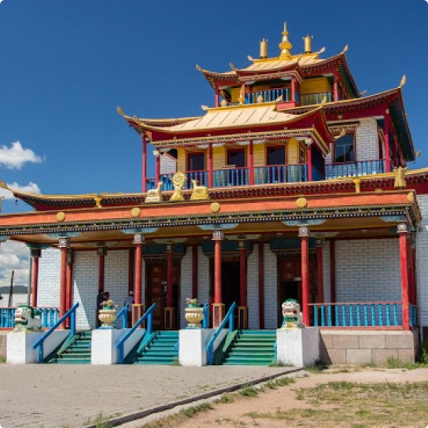
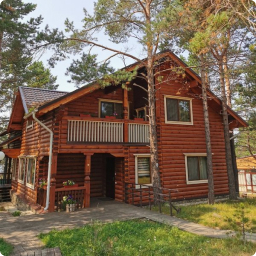
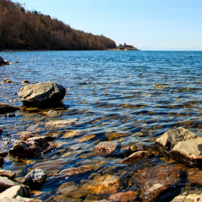

Путешествия
по Байкалу
Туры по самому красивому месту России.
Поехали с нами за новыми впечатлениями!


Основные направления деятельности
Групповые и индивидуальные туры по Байкалу для российских и иностранных туристов
Экскурсии по городу Улан-Удэ, Республике Бурятия,городу Иркутск
Услуги гидов-переводчиков на любом иностранном языке
Круизы и прогулки по Байкалу на теплоходах и катерах
Профессиональная организация охоты и рыбалки на Байкале
Аренда автотранспорта для экскурсий и пассажирских перевозок
Бронирование гостиниц в городе Улан-Удэ и на Байкале
Организация индивидуальных туров и VIP-туров на Байкале
Популярные предложения
-
Зимний однодневный тур на Чивыркуйский залив

Cтоимость 4000 руб.
-
Зимний однодневный тур на остров Ольхон

Cтоимость 5000 руб.
-
Экскурсия в Иволгинский дацан
Продолжительность 4 часа Cтоимость от 500 руб.
-
Обзорная экскурсия по Улан-Удэ

Продолжительность 3 часа Cтоимость от 500 руб.
-
Эко-отель «Байкальское шале», с. Максимиха

Стоимость от 6500 руб.
-
Летний однодневный тур в Чивыркуйский залив

Cтоимость 4000 руб.
-
Отель «Белая Карета», с. Горячинск

Cтоимость от 3200 руб.
-
Однодневная поездка на Байкал «Байкальская Гавань»

Стоимость от 1000 руб.
-
Парк-отель «Сагаан-Морин», с. Сухая

Стоимость от 3500 руб.
-
Летний однодневный тур на остров Ольхон

Стоимость 8500 руб.
-
Парк-отель «Байкальская Ривьера», с. Гремячинск

Cтоимость от 3700 руб.
-
Зимний тур «Чивыркуйская сказка»
Стоимость 2000 руб.
-
Показать все предложения

Карта Байкала

О Байкале
Озеро Байкал – глубочайшее и древнейшее озеро планеты. Древние жители Прибайкалья называли его Священным морем и считали, что в Байкале нет дна, обожествляли и наделяли его мистическими свойствами. Именно здесь пронзительные чувства и скрытые способности человека находят выплеск.
Познается что-то новое не только в природе, но и в самом себе. Многие посетившие Байкал люди утверждают, что озеро оказало большое влияние на их дальнейшую жизнь.
Читать подробней


Байкальский отдых с нами – это легко!

На сайте туристического агентства «Байкальский отдых» вы найдете всю необходимую информацию о туристических базах отдыха на озере Байкал. Любите ли вы отличный сервис и европейский комфорт или предпочитаете прочувствовать все трудности дикого туризма и окунуться в атмосферу байкальской природы, здесь вы сможете найти турбазу по своему вкусу.
Туристические базы отдыха на Байкале предоставляют разнообразные условия размещения, они отличаются по перечню предлагаемых услуг и уровню комфорта.
Есть большие турбазы с полностью организованным питанием и вечерними дискотеками, есть также небольшие малолюдные базы всего с несколькими коттеджами. Можно арендовать отдельный гостевой домик с кухней и готовить пищу самостоятельно.
Среди этого многообразия обязательно найдется подходящая, именно вам, база отдыха. Тем не менее, Байкал, до сих пор, обладает всеми оттенками дикого экотуризма, чем и привлекает, уставших от городской суеты, туристов.
Если вы предпочитаете зимний байкальский отдых, к Вашим услугам круглогодичные отапливаемые турбазы и различные зимние развлечения. Байкал зимой поражает кристальной чистотой и прозрачностью льда.
Туристы очень любят отмечать Новогодние праздники и Рождество на турбазах Байкала, так как новый год на Байкале отличается особым волшебством. Развлекательную новогоднюю программу готовит почти каждая турбаза.
Преимущества
7лет успешной работы
250+отелей на Байкале
100+различных туров
32 000кв. км – площадь на которой мы организовываем путешествия
50 000довольных туристов от 3 до 85 лет